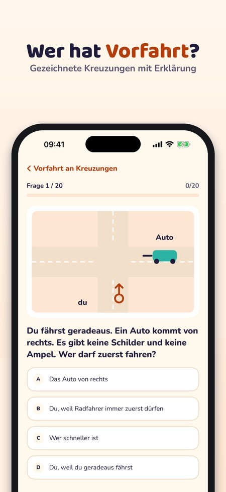
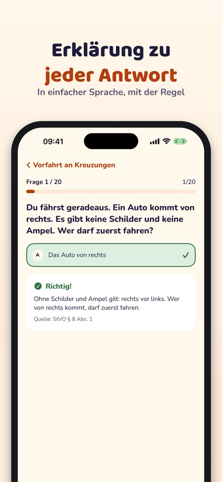
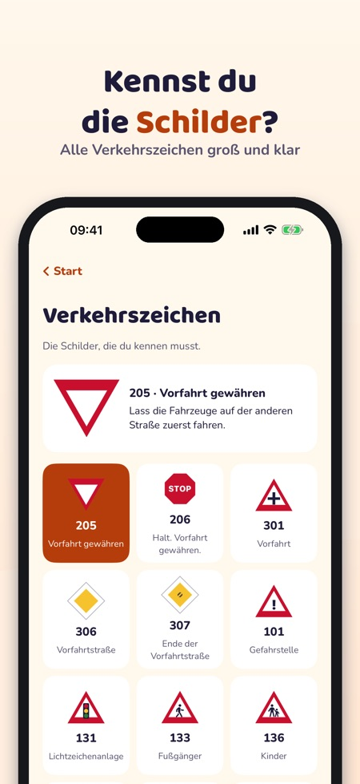

Verkehrserziehung Grundschule. Practise for the German cycling test (Radfahrprüfung) in year 4: questions with explanations, junctions, road signs and a mock test – offline.



Radheld helps children practise for the cycling test at school – junctions, road signs and cycling rules explained in plain language.
The questions are in the language of the country you choose in the app: German for the Radfahrprüfung (Germany), Dutch for the verkeersexamen (Netherlands), Danish for the cyklistprøve (Denmark) and Polish for the karta rowerowa (Poland). The menus are also in English.
20 questions, the road signs, the glossary and the checklist can be used without a purchase. The full version is a one-time purchase that unlocks all questions, mock tests and statistics. No subscription. Purchases and links out of the app only through a parent (parental gate).
Radheld is independent and does not run any test. The test itself takes place at school. The app collects no data and has no ads.